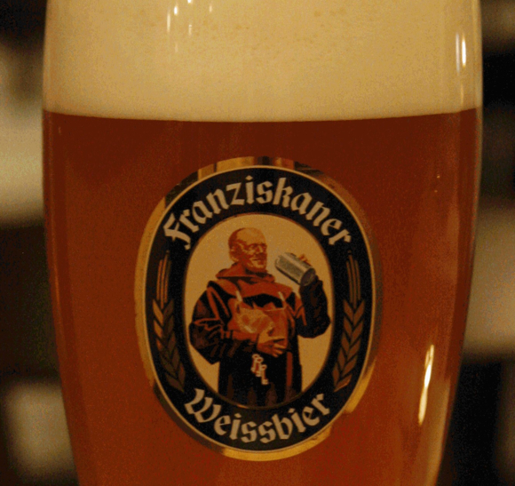

La Rubia
Sus Orígenes
La marca de cerveza Pilsner Urquell cumple 169 años, esta marca creo la primera cerveza rubia de la historia, el resto de las cervezas rubias nacieron de su receta original. La marca cervecera Pilsner Urquell la creo un 10 de noviembre de 1842, en la ciudad de Pilsen, la actual República Checa, fue testigo de este singular nacimiento, el de una rubia que dejaría atrás y para siempre milenos de cervezas turbias y oscuras. Años más tarde la categoría Pilse, Pils, Pilsner... acompañaría como apellido a numerosas marcas, por lo que Pilsner añadiría en 1898 a su cerveza la palabra "Urquell", que significa "de la fuente original".
Algunos Tipos de Cerveza Rubia
Weißbier
La Weissbier (en español, «cerveza blanca») o también Weizenbier (en español «cerveza de trigo») es un tipo de cerveza típica de la región de Baviera, en el sur de Alemania. Se caracteriza sobre todo por ser hecha no sólo con malta de cebada sino con una elevada proporción de malta de trigo, que le da una característica tonalidad blanquecina (aspecto turbio) y un ligero sabor a vainilla.
India Pale Ale

La India Pale Ale (comúnmente abreviado como IPA) es un estilo de cerveza de tradición inglesa que se caracteriza como una ale pálida y espumosa con un alto nivel del alcohol y de lúpulo. La creación de la India pale ale durante la década de 1790 fue el resultado de esfuerzos de los cerveceros británicos por superar un problema difícil: a comienzos del siglo XVIII la cerveza no se conservaba bien en los largos viajes por el océano, especialmente en climas cálidos.1 Estos ambientes hacían que la cerveza se volviese caduca y agria.
HoneyBeer
Los celtas y otras civilizaciones antiguas solían hacer aguamiel mediante la fermentación de la miel. También producian cerveza, bragot, a la cual a menudo se la añadia miel como un suave edulcorante. Una confusa cerveza llamada goldean mead ale se produjo en inglaterra por Hope & Anchor Breweries de Sheffield, y fue muy exportada hasta principios de los años 60'. Hoy, unas pocas cerveceras han revivido al estilo, como por ejemplo Ward's of Sheffield con Waggle Dance y Emville Ales de Staffordshire. Algunas nuevas cerveceras americanas utilizan miel, como hace la innovadora belga De Dolle Brouwers en su cerveza Boskeun.